6 Section 5 - Classification with More than Two Classes and the Caret Package
In the Classification with More than Two Classes and the Caret Package section, you will learn how to overcome the curse of dimensionality using methods that adapt to higher dimensions and how to use the caret package to implement many different machine learning algorithms.
After completing this section, you will be able to:
- Use classification and regression trees.
- Use classification (decision) trees.
- Apply random forests to address the shortcomings of decision trees.
- Use the caret package to implement a variety of machine learning algorithms.
This section has three parts: classification with more than two classes, caret package, and a set of exercises on the Titanic.
6.1 Trees Motivation
There is a link to the relevant section of the textbook: The curse of dimensionality
Key points
- LDA and QDA are not meant to be used with many predictors \(p\) because the number of parameters needed to be estimated becomes too large.
- Curse of dimensionality: For kernel methods such as kNN or local regression, when they have multiple predictors used, the span/neighborhood/window made to include a given percentage of the data become large. With larger neighborhoods, our methods lose flexibility. The dimension here refers to the fact that when we have \(p\) predictors, the distance between two observations is computed in \(p\)-dimensional space.
6.2 Classification and Regression Trees (CART)
There is a link to the relevant sections of the textbook: CART motivation and Regression trees
Key points
- A tree is basically a flow chart of yes or no questions. The general idea of the methods we are describing is to define an algorithm that uses data to create these trees with predictions at the ends, referred to as nodes.
- When the outcome is continuous, we call the decision tree method a regression tree.
- Regression and decision trees operate by predicting an outcome variable \(Y\) by partitioning the predictors.
- The general idea here is to build a decision tree and, at end of each node, obtain a predictor \(\hat{y}\). Mathematically, we are partitioning the predictor space into \(J\) non-overlapping regions, \(R_{1}\), \(R_{2}\), …, \(R_{J}\) and then for any predictor \(x\) that falls within region \(R_{j}\), estimate \(f(x)\) with the average of the training observations \(y_{i}\) for which the associated predictor \(x_{i}\) in also in \(R_{j}\).
- To pick \(j\) and its value \(s\), we find the pair that minimizes the residual sum of squares (RSS):
\(\sum_{i: x_{i}R_{1}(j,s)}(y_{i} - \hat{y}_{R_{1}})^2 + \sum_{i: x_{i}R_{2}(j,s)}(y_{i} - \hat{y}_{R_{2}})^2\)
- To fit the regression tree model, we can use the
rpart()function in the rpart package. - Two common parameters used for partition decision are the complexity parameter (
cp) and the minimum number of observations required in a partition before partitioning it further (minsplitin the rpart package). - If we already have a tree and want to apply a higher
cpvalue, we can use theprune()function. We call this pruning a tree because we are snipping off partitions that do not meet a cp criterion.
Code
# Load data
data("olive")
olive %>% as_tibble()## # A tibble: 572 x 10
## region area palmitic palmitoleic stearic oleic linoleic linolenic arachidic eicosenoic
## <fct> <fct> <dbl> <dbl> <dbl> <dbl> <dbl> <dbl> <dbl> <dbl>
## 1 Southern Italy North-Apulia 10.8 0.75 2.26 78.2 6.72 0.36 0.6 0.290
## 2 Southern Italy North-Apulia 10.9 0.73 2.24 77.1 7.81 0.31 0.61 0.290
## 3 Southern Italy North-Apulia 9.11 0.54 2.46 81.1 5.49 0.31 0.63 0.290
## 4 Southern Italy North-Apulia 9.66 0.570 2.4 79.5 6.19 0.5 0.78 0.35
## 5 Southern Italy North-Apulia 10.5 0.67 2.59 77.7 6.72 0.5 0.8 0.46
## 6 Southern Italy North-Apulia 9.11 0.49 2.68 79.2 6.78 0.51 0.7 0.44
## 7 Southern Italy North-Apulia 9.22 0.66 2.64 79.9 6.18 0.49 0.56 0.290
## 8 Southern Italy North-Apulia 11 0.61 2.35 77.3 7.34 0.39 0.64 0.35
## 9 Southern Italy North-Apulia 10.8 0.6 2.39 77.4 7.09 0.46 0.83 0.33
## 10 Southern Italy North-Apulia 10.4 0.55 2.13 79.4 6.33 0.26 0.52 0.3
## # … with 562 more rowstable(olive$region)##
## Northern Italy Sardinia Southern Italy
## 151 98 323olive <- dplyr::select(olive, -area)
# Predict region using KNN
fit <- train(region ~ ., method = "knn",
tuneGrid = data.frame(k = seq(1, 15, 2)),
data = olive)
ggplot(fit)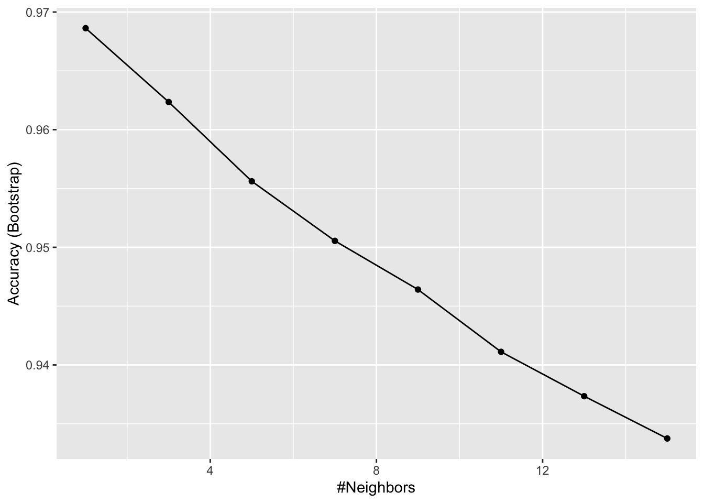
# Plot distribution of each predictor stratified by region
olive %>% gather(fatty_acid, percentage, -region) %>%
ggplot(aes(region, percentage, fill = region)) +
geom_boxplot() +
facet_wrap(~fatty_acid, scales = "free") +
theme(axis.text.x = element_blank())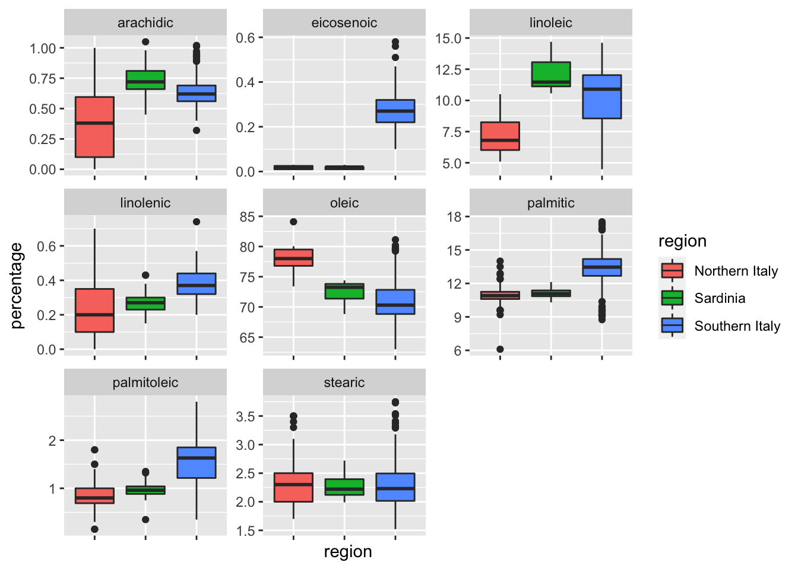
# plot values for eicosenoic and linoleic
p <- olive %>%
ggplot(aes(eicosenoic, linoleic, color = region)) +
geom_point()
p + geom_vline(xintercept = 0.065, lty = 2) +
geom_segment(x = -0.2, y = 10.54, xend = 0.065, yend = 10.54, color = "black", lty = 2)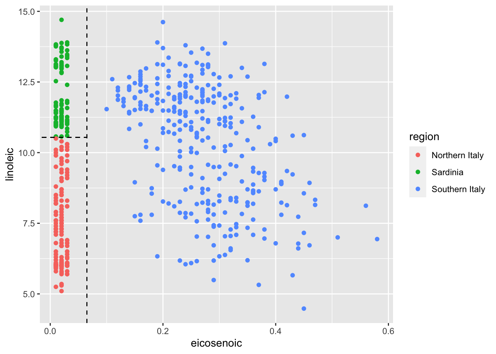
# load data for regression tree
data("polls_2008")
qplot(day, margin, data = polls_2008)
if(!require(rpart)) install.packages("rpart")## Loading required package: rpartlibrary(rpart)
fit <- rpart(margin ~ ., data = polls_2008)
# visualize the splits
plot(fit, margin = 0.1)
text(fit, cex = 0.75)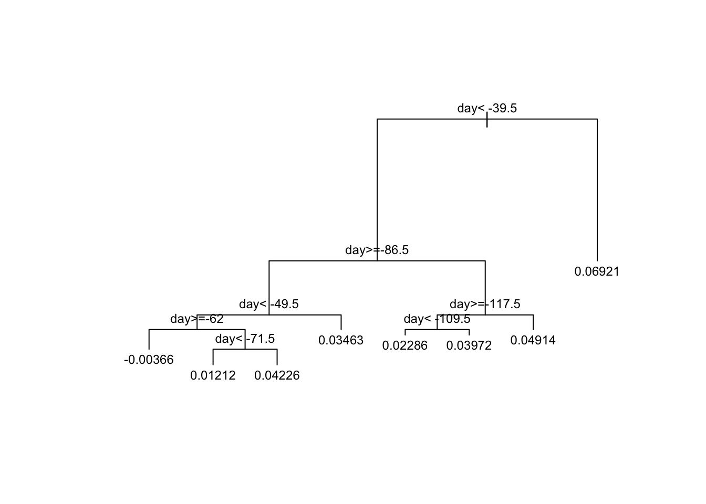
polls_2008 %>%
mutate(y_hat = predict(fit)) %>%
ggplot() +
geom_point(aes(day, margin)) +
geom_step(aes(day, y_hat), col="red")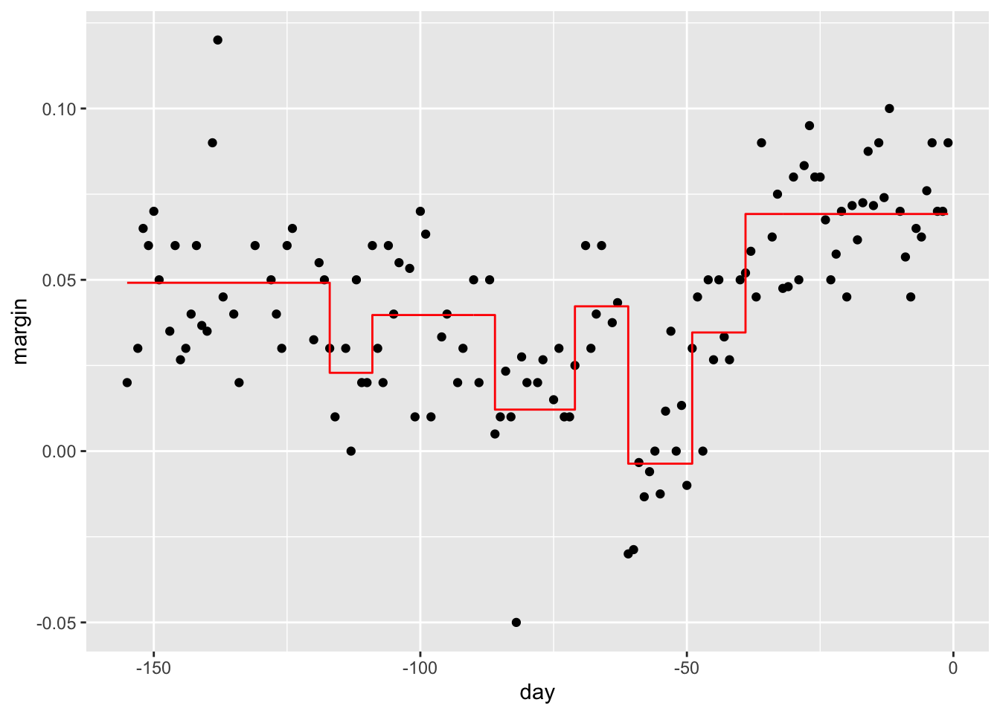
# change parameters
fit <- rpart(margin ~ ., data = polls_2008, control = rpart.control(cp = 0, minsplit = 2))
polls_2008 %>%
mutate(y_hat = predict(fit)) %>%
ggplot() +
geom_point(aes(day, margin)) +
geom_step(aes(day, y_hat), col="red")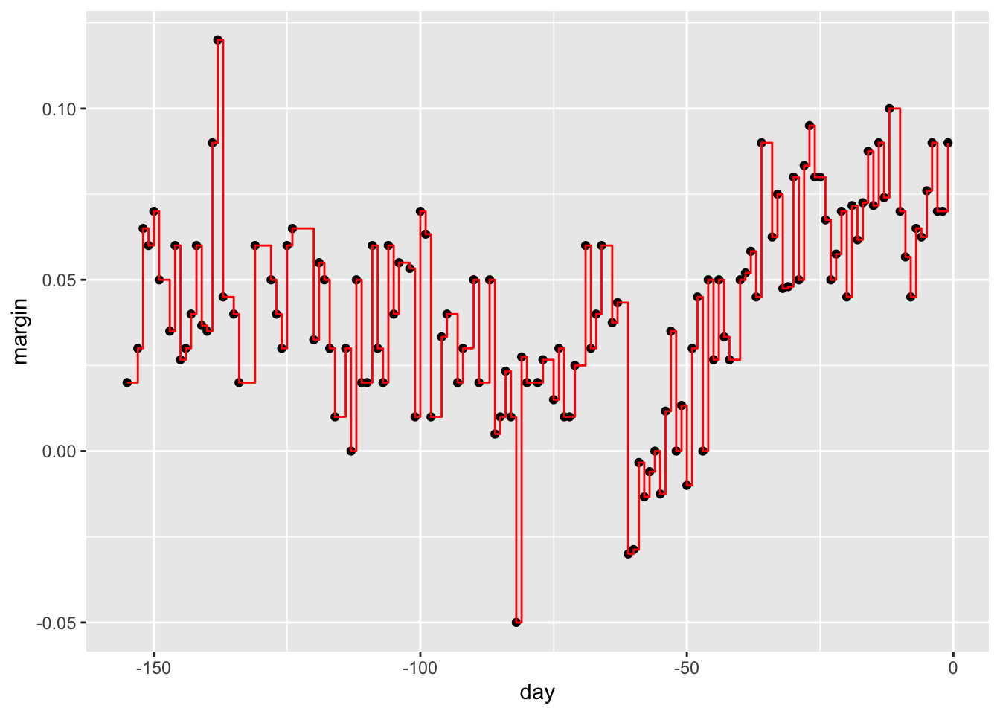
# use cross validation to choose cp
train_rpart <- train(margin ~ ., method = "rpart", tuneGrid = data.frame(cp = seq(0, 0.05, len = 25)), data = polls_2008)
ggplot(train_rpart)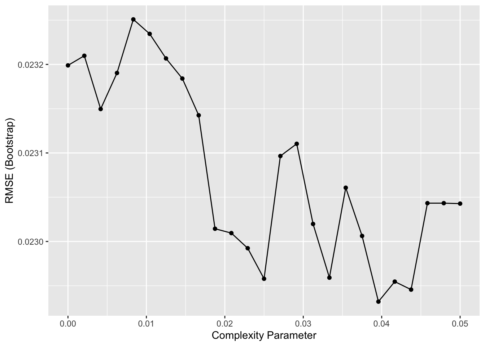
# access the final model and plot it
plot(train_rpart$finalModel, margin = 0.1)
text(train_rpart$finalModel, cex = 0.75)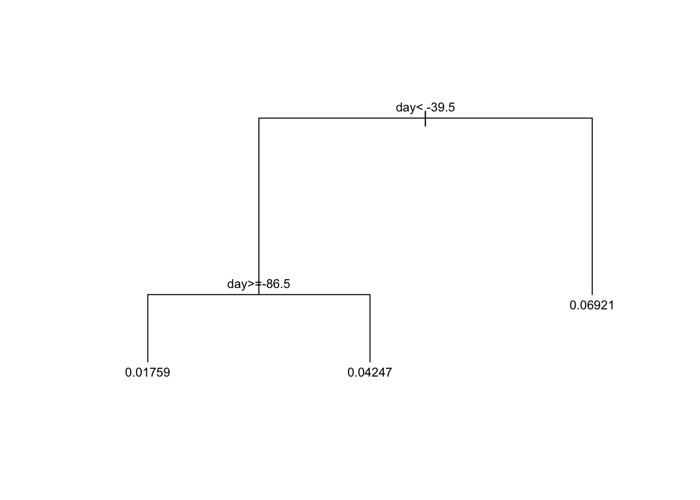
polls_2008 %>%
mutate(y_hat = predict(train_rpart)) %>%
ggplot() +
geom_point(aes(day, margin)) +
geom_step(aes(day, y_hat), col="red")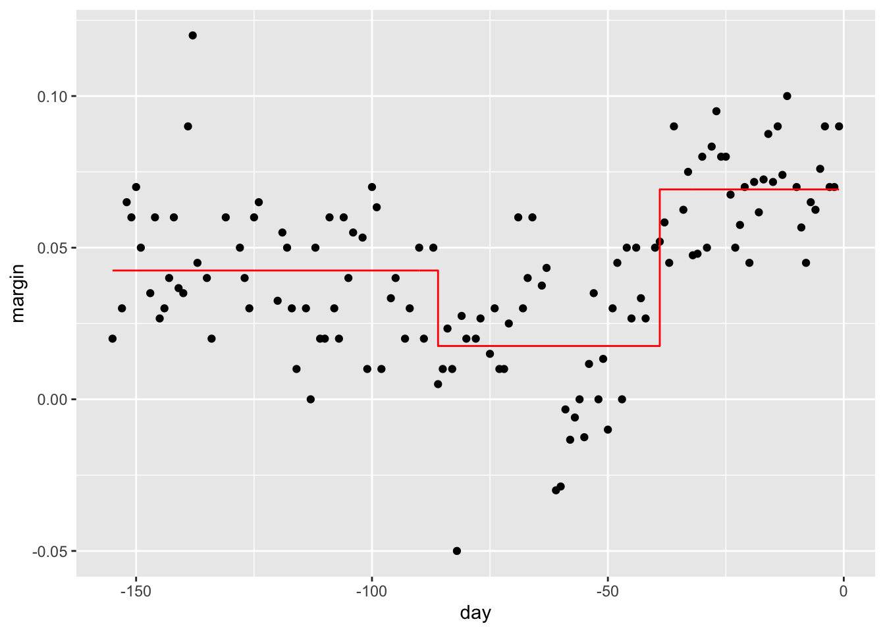
# prune the tree
pruned_fit <- prune(fit, cp = 0.01)6.3 Classification (Decision) Trees
There is a link to the relevant section of the textbook: Classification (decision) trees
Key points
- Classification trees, or decision trees, are used in prediction problems where the outcome is categorical.
- Decision trees form predictions by calculating which class is the most common among the training set observations within the partition, rather than taking the average in each partition.
- Two of the more popular metrics to choose the partitions are the Gini index and entropy.
\(\text{Gini}(j) = \sum_{k=1}^K\hat{p}_{j,k}(1 - \hat{p}_{j,k})\)
\(\text{entropy}(j) = - \sum_{k=1}^K\hat{p}_{j,k}log(\hat{p}_{j,k}), \text{with } 0 \times \log(0) \text{defined as } 0\)
- Pros: Classification trees are highly interpretable and easy to visualize.They can model human decision processes and don’t require use of dummy predictors for categorical variables.
- Cons: The approach via recursive partitioning can easily over-train and is therefore a bit harder to train than. Furthermore, in terms of accuracy, it is rarely the best performing method since it is not very flexible and is highly unstable to changes in training data.
Code
# fit a classification tree and plot it
train_rpart <- train(y ~ .,
method = "rpart",
tuneGrid = data.frame(cp = seq(0.0, 0.1, len = 25)),
data = mnist_27$train)
plot(train_rpart)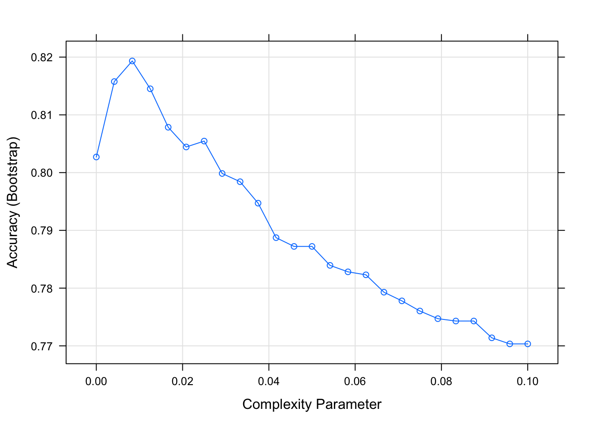
# compute accuracy
confusionMatrix(predict(train_rpart, mnist_27$test), mnist_27$test$y)$overall["Accuracy"]## Accuracy
## 0.826.4 Random Forests
There is a link to the relevant section of the textbook: Random forests
Key points
- Random forests are a very popular machine learning approach that addresses the shortcomings of decision trees. The goal is to improve prediction performance and reduce instability by averaging multiple decision trees (a forest of trees constructed with randomness).
- The general idea of random forests is to generate many predictors, each using regression or classification trees, and then forming a final prediction based on the average prediction of all these trees. To assure that the individual trees are not the same, we use the bootstrap to induce randomness.
- A disadvantage of random forests is that we lose interpretability.
- An approach that helps with interpretability is to examine variable importance. To define variable importance we count how often a predictor is used in the individual trees. The caret package includes the function
varImpthat extracts variable importance from any model in which the calculation is implemented.
Code
if(!require(randomForest)) install.packages("randomForest")## Loading required package: randomForest## randomForest 4.6-14## Type rfNews() to see new features/changes/bug fixes.##
## Attaching package: 'randomForest'## The following object is masked from 'package:gridExtra':
##
## combine## The following object is masked from 'package:dplyr':
##
## combine## The following object is masked from 'package:ggplot2':
##
## marginif(!require(Rborist)) install.packages("Rborist")## Loading required package: Rborist## Rborist 0.2-3## Type RboristNews() to see new features/changes/bug fixes.library(randomForest)
fit <- randomForest(margin~., data = polls_2008)
plot(fit)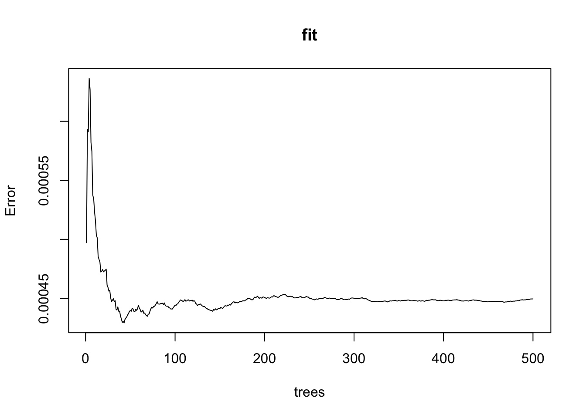
polls_2008 %>%
mutate(y_hat = predict(fit, newdata = polls_2008)) %>%
ggplot() +
geom_point(aes(day, margin)) +
geom_line(aes(day, y_hat), col="red")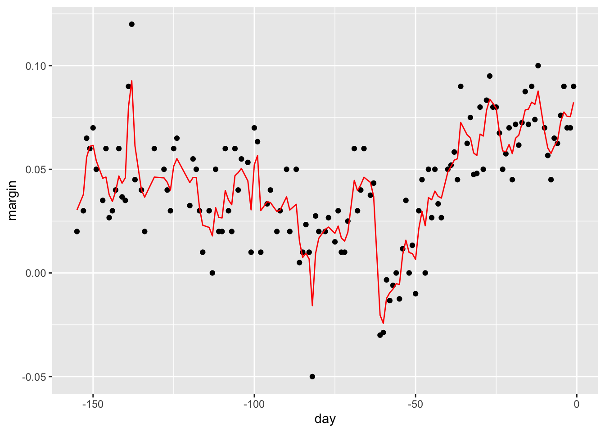
train_rf <- randomForest(y ~ ., data=mnist_27$train)
confusionMatrix(predict(train_rf, mnist_27$test), mnist_27$test$y)$overall["Accuracy"]## Accuracy
## 0.785# use cross validation to choose parameter
train_rf_2 <- train(y ~ .,
method = "Rborist",
tuneGrid = data.frame(predFixed = 2, minNode = c(3, 50)),
data = mnist_27$train)
confusionMatrix(predict(train_rf_2, mnist_27$test), mnist_27$test$y)$overall["Accuracy"]## Accuracy
## 0.86.5 Comprehension Check - Trees and Random Forests
- Create a simple dataset where the outcome grows 0.75 units on average for every increase in a predictor, using this code:
n <- 1000
sigma <- 0.25
# set.seed(1) # if using R 3.5 or ealier
set.seed(1, sample.kind = "Rounding") # if using R 3.6 or later## Warning in set.seed(1, sample.kind = "Rounding"): non-uniform 'Rounding' sampler usedx <- rnorm(n, 0, 1)
y <- 0.75 * x + rnorm(n, 0, sigma)
dat <- data.frame(x = x, y = y)Which code correctly uses rpart() to fit a regression tree and saves the result to fit?
A.
fit <- rpart(y ~ .)B.
fit <- rpart(y, ., data = dat)C.
fit <- rpart(x ~ ., data = dat)D.
fit <- rpart(y ~ ., data = dat)
- Which of the following plots has the same tree shape obtained in Q1?
fit <- rpart(y ~ ., data = dat)
plot(fit)
text(fit)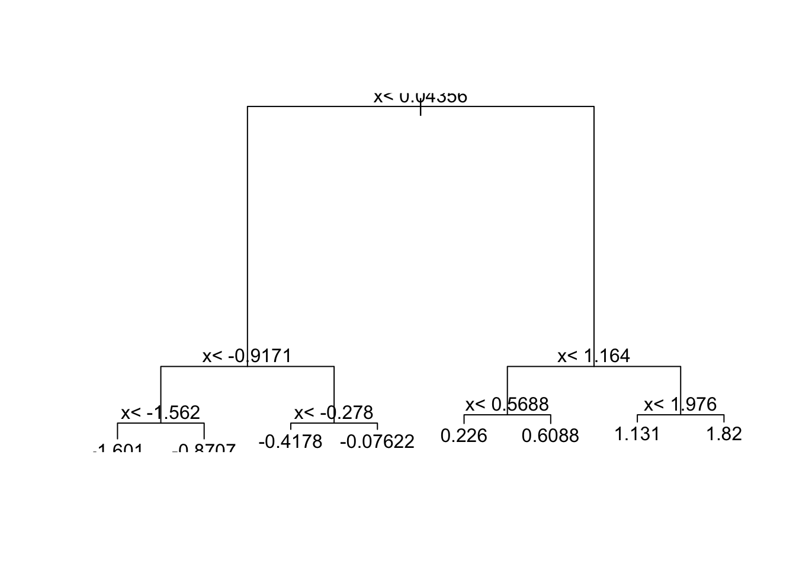
- A.
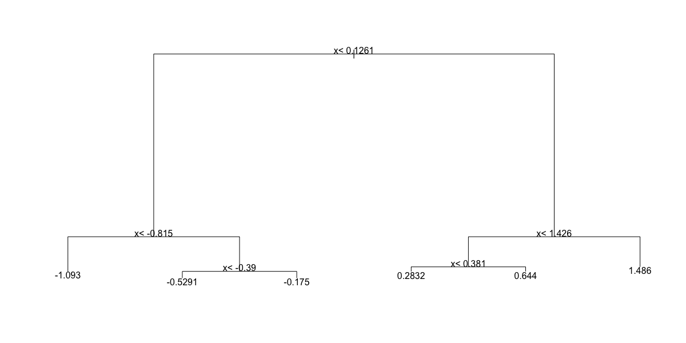
- B.
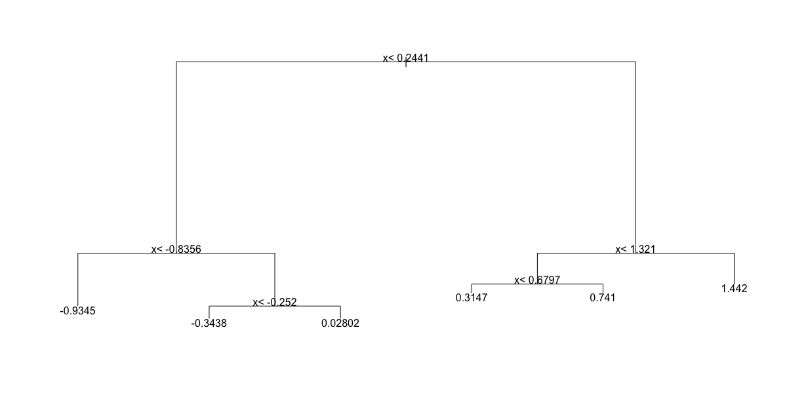
- C.
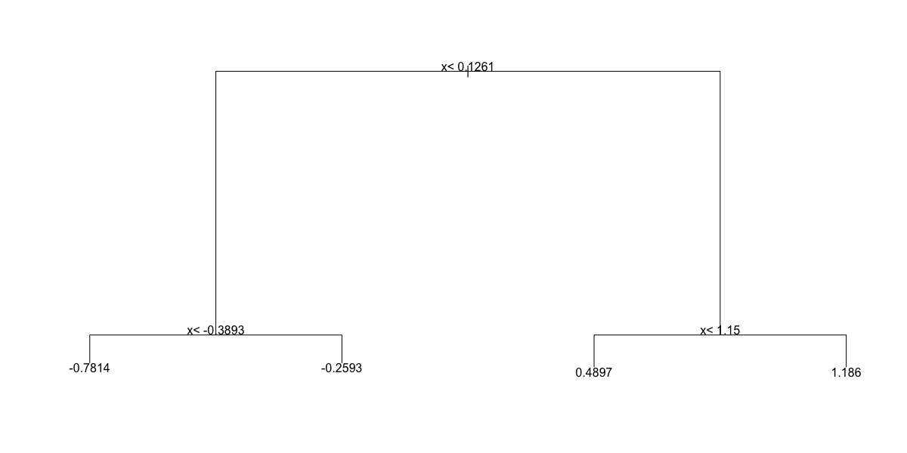
- D.
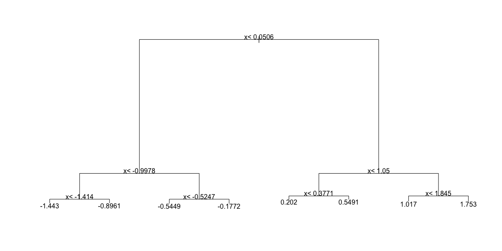
- Below is most of the code to make a scatter plot of
yversusxalong with the predicted values based on the fit.
dat %>%
mutate(y_hat = predict(fit)) %>%
ggplot() +
geom_point(aes(x, y)) +
#BLANKWhich line of code should be used to replace #BLANK in the code above?
dat %>%
mutate(y_hat = predict(fit)) %>%
ggplot() +
geom_point(aes(x, y)) +
geom_step(aes(x, y_hat), col=2)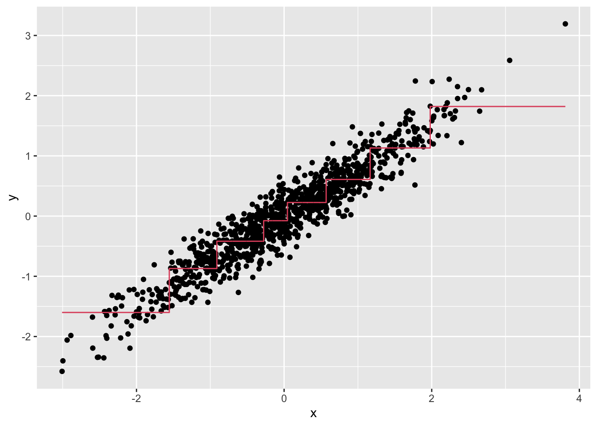
A.
geom_step(aes(x, y_hat), col=2)B.
geom_smooth(aes(y_hat, x), col=2)C.
geom_quantile(aes(x, y_hat), col=2)D.
geom_step(aes(y_hat, x), col=2)
- Now run Random Forests instead of a regression tree using
randomForest()from the randomForest package, and remake the scatterplot with the prediction line. Part of the code is provided for you below.
library(randomForest)
fit <- #BLANK
dat %>%
mutate(y_hat = predict(fit)) %>%
ggplot() +
geom_point(aes(x, y)) +
geom_step(aes(x, y_hat), col = "red")What code should replace #BLANK in the provided code?
library(randomForest)
fit <- randomForest(y ~ x, data = dat)
dat %>%
mutate(y_hat = predict(fit)) %>%
ggplot() +
geom_point(aes(x, y)) +
geom_step(aes(x, y_hat), col = "red")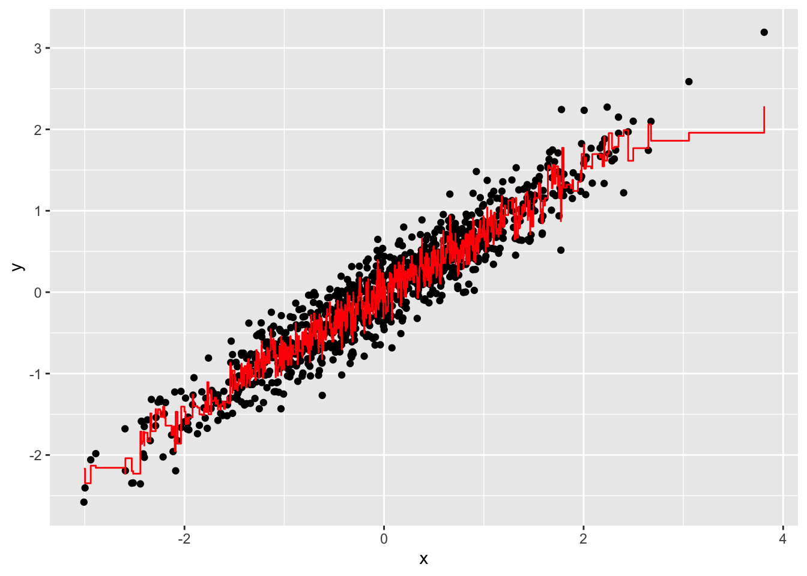
A.
randomForest(y ~ x, data = dat)B.
randomForest(x ~ y, data = dat)C.
randomForest(y ~ x, data = data)D.
randomForest(x ~ y)
- Use the
plot()function to see if the Random Forest from Q4 has converged or if we need more trees.
Which of these graphs is most similar to the one produced by plotting the random forest? Note that there may be slight differences due to the seed not being set.
plot(fit)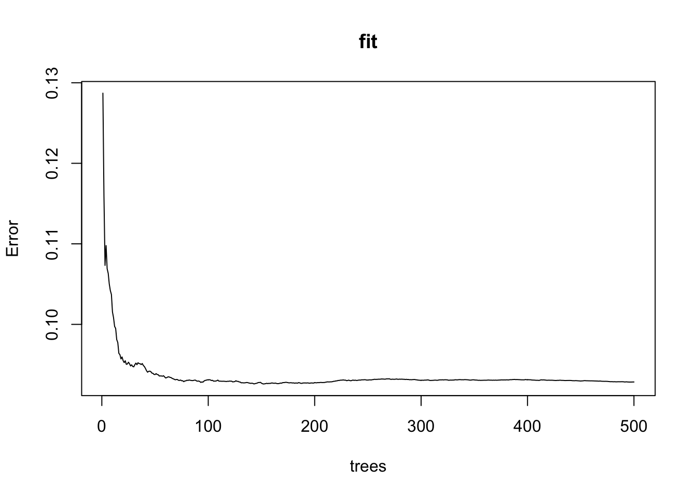
- A.
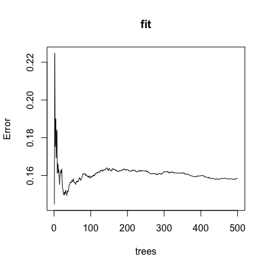
- B.
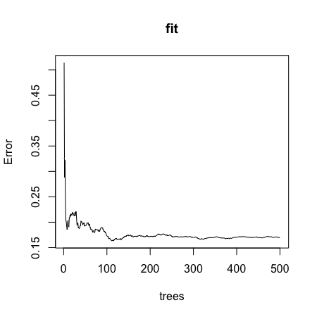
- C.
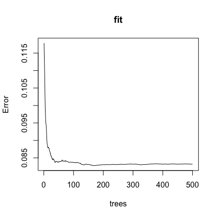
- D.
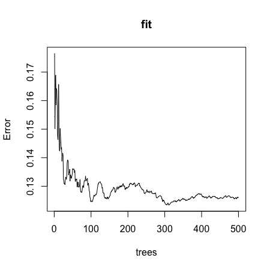
- It seems that the default values for the Random Forest result in an estimate that is too flexible (unsmooth). Re-run the Random Forest but this time with a node size of 50 and a maximum of 25 nodes. Remake the plot.
Part of the code is provided for you below.
library(randomForest)
fit <- #BLANK
dat %>%
mutate(y_hat = predict(fit)) %>%
ggplot() +
geom_point(aes(x, y)) +
geom_step(aes(x, y_hat), col = "red")What code should replace #BLANK in the provided code?
library(randomForest)
fit <- randomForest(y ~ x, data = dat, nodesize = 50, maxnodes = 25)
dat %>%
mutate(y_hat = predict(fit)) %>%
ggplot() +
geom_point(aes(x, y)) +
geom_step(aes(x, y_hat), col = "red")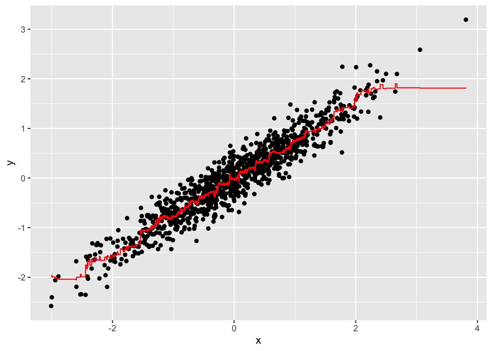
A.
randomForest(y ~ x, data = dat, nodesize = 25, maxnodes = 25)B.
randomForest(y ~ x, data = dat, nodes = 50, max = 25)C.
randomForest(x ~ y, data = dat, nodes = 50, max = 25)D.
randomForest(y ~ x, data = dat, nodesize = 50, maxnodes = 25)E.
randomForest(x ~ y, data = dat, nodesize = 50, maxnodes = 25)
6.6 Caret Package
There is a link to the relevant section of the textbook: The caret package
Caret package links
http://topepo.github.io/caret/available-models.html
http://topepo.github.io/caret/train-models-by-tag.html
Key points
- The caret package helps provides a uniform interface and standardized syntax for the many different machine learning packages in R. Note that caret does not automatically install the packages needed.
Code
data("mnist_27")
train_glm <- train(y ~ ., method = "glm", data = mnist_27$train)
train_knn <- train(y ~ ., method = "knn", data = mnist_27$train)
y_hat_glm <- predict(train_glm, mnist_27$test, type = "raw")
y_hat_knn <- predict(train_knn, mnist_27$test, type = "raw")
confusionMatrix(y_hat_glm, mnist_27$test$y)$overall[["Accuracy"]]## [1] 0.75confusionMatrix(y_hat_knn, mnist_27$test$y)$overall[["Accuracy"]]## [1] 0.846.7 Tuning Parameters with Caret
There is a link to the relevant section of the textbook: Cross validation
Key points
- The
train()function automatically uses cross-validation to decide among a few default values of a tuning parameter. - The
getModelInfo()andmodelLookup()functions can be used to learn more about a model and the parameters that can be optimized. - We can use the
tunegrid()parameter in thetrain()function to select a grid of values to be compared. - The
trControlparameter andtrainControl()function can be used to change the way cross-validation is performed. - Note that not all parameters in machine learning algorithms are tuned. We use the
train()function to only optimize parameters that are tunable.
Code
getModelInfo("knn")## $kknn
## $kknn$label
## [1] "k-Nearest Neighbors"
##
## $kknn$library
## [1] "kknn"
##
## $kknn$loop
## NULL
##
## $kknn$type
## [1] "Regression" "Classification"
##
## $kknn$parameters
## parameter class label
## 1 kmax numeric Max. #Neighbors
## 2 distance numeric Distance
## 3 kernel character Kernel
##
## $kknn$grid
## function(x, y, len = NULL, search = "grid") {
## if(search == "grid") {
## out <- data.frame(kmax = (5:((2 * len)+4))[(5:((2 * len)+4))%%2 > 0],
## distance = 2,
## kernel = "optimal")
## } else {
## by_val <- if(is.factor(y)) length(levels(y)) else 1
## kerns <- c("rectangular", "triangular", "epanechnikov", "biweight", "triweight",
## "cos", "inv", "gaussian")
## out <- data.frame(kmax = sample(seq(1, floor(nrow(x)/3), by = by_val), size = len, replace = TRUE),
## distance = runif(len, min = 0, max = 3),
## kernel = sample(kerns, size = len, replace = TRUE))
## }
## out
## }
##
## $kknn$fit
## function(x, y, wts, param, lev, last, classProbs, ...) {
## dat <- if(is.data.frame(x)) x else as.data.frame(x, stringsAsFactors = TRUE)
## dat$.outcome <- y
## kknn::train.kknn(.outcome ~ ., data = dat,
## kmax = param$kmax,
## distance = param$distance,
## kernel = as.character(param$kernel), ...)
## }
##
## $kknn$predict
## function(modelFit, newdata, submodels = NULL) {
## if(!is.data.frame(newdata)) newdata <- as.data.frame(newdata, stringsAsFactors = TRUE)
## predict(modelFit, newdata)
## }
##
## $kknn$levels
## function(x) x$obsLevels
##
## $kknn$tags
## [1] "Prototype Models"
##
## $kknn$prob
## function(modelFit, newdata, submodels = NULL) {
## if(!is.data.frame(newdata)) newdata <- as.data.frame(newdata, stringsAsFactors = TRUE)
## predict(modelFit, newdata, type = "prob")
## }
##
## $kknn$sort
## function(x) x[order(-x[,1]),]
##
##
## $knn
## $knn$label
## [1] "k-Nearest Neighbors"
##
## $knn$library
## NULL
##
## $knn$loop
## NULL
##
## $knn$type
## [1] "Classification" "Regression"
##
## $knn$parameters
## parameter class label
## 1 k numeric #Neighbors
##
## $knn$grid
## function(x, y, len = NULL, search = "grid"){
## if(search == "grid") {
## out <- data.frame(k = (5:((2 * len)+4))[(5:((2 * len)+4))%%2 > 0])
## } else {
## by_val <- if(is.factor(y)) length(levels(y)) else 1
## out <- data.frame(k = sample(seq(1, floor(nrow(x)/3), by = by_val), size = len, replace = TRUE))
## }
## }
##
## $knn$fit
## function(x, y, wts, param, lev, last, classProbs, ...) {
## if(is.factor(y))
## {
## knn3(as.matrix(x), y, k = param$k, ...)
## } else {
## knnreg(as.matrix(x), y, k = param$k, ...)
## }
## }
##
## $knn$predict
## function(modelFit, newdata, submodels = NULL) {
## if(modelFit$problemType == "Classification")
## {
## out <- predict(modelFit, newdata, type = "class")
## } else {
## out <- predict(modelFit, newdata)
## }
## out
## }
##
## $knn$predictors
## function(x, ...) colnames(x$learn$X)
##
## $knn$tags
## [1] "Prototype Models"
##
## $knn$prob
## function(modelFit, newdata, submodels = NULL)
## predict(modelFit, newdata, type = "prob")
##
## $knn$levels
## function(x) levels(x$learn$y)
##
## $knn$sort
## function(x) x[order(-x[,1]),]modelLookup("knn")## model parameter label forReg forClass probModel
## 1 knn k #Neighbors TRUE TRUE TRUEtrain_knn <- train(y ~ ., method = "knn", data = mnist_27$train)
ggplot(train_knn, highlight = TRUE)
train_knn <- train(y ~ ., method = "knn",
data = mnist_27$train,
tuneGrid = data.frame(k = seq(9, 71, 2)))
ggplot(train_knn, highlight = TRUE)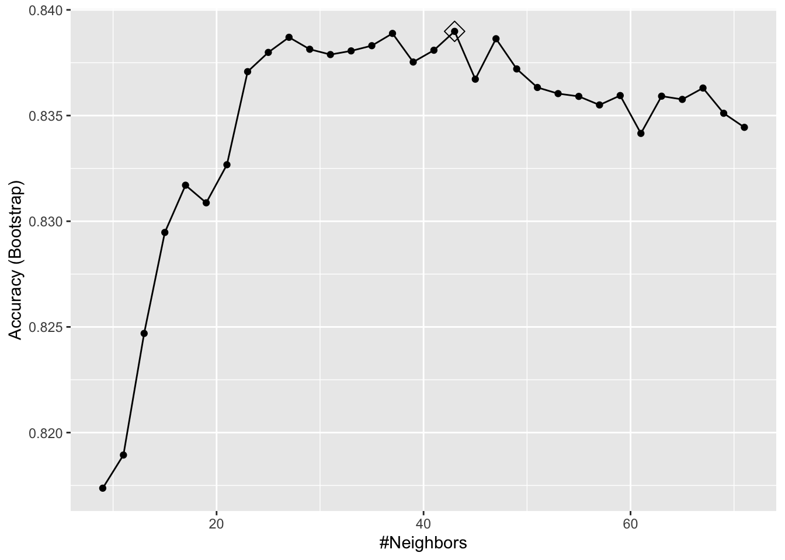
train_knn$bestTune## k
## 18 43train_knn$finalModel## 43-nearest neighbor model
## Training set outcome distribution:
##
## 2 7
## 379 421confusionMatrix(predict(train_knn, mnist_27$test, type = "raw"),
mnist_27$test$y)$overall["Accuracy"]## Accuracy
## 0.855control <- trainControl(method = "cv", number = 10, p = .9)
train_knn_cv <- train(y ~ ., method = "knn",
data = mnist_27$train,
tuneGrid = data.frame(k = seq(9, 71, 2)),
trControl = control)
ggplot(train_knn_cv, highlight = TRUE)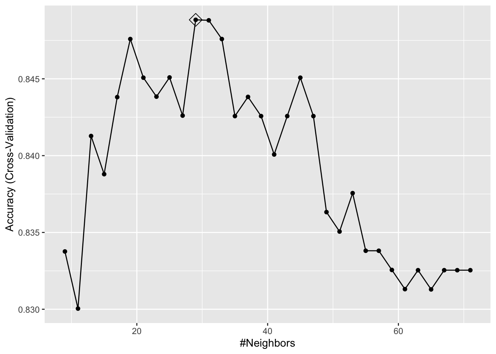
train_knn$results %>%
ggplot(aes(x = k, y = Accuracy)) +
geom_line() +
geom_point() +
geom_errorbar(aes(x = k,
ymin = Accuracy - AccuracySD,
ymax = Accuracy + AccuracySD))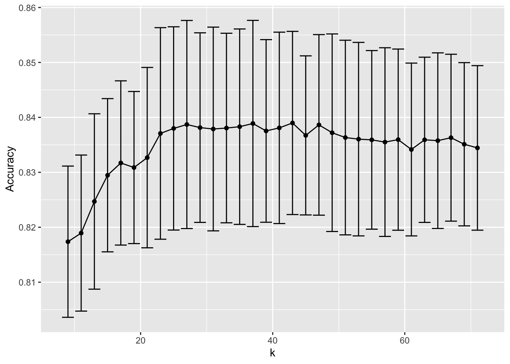
plot_cond_prob <- function(p_hat=NULL){
tmp <- mnist_27$true_p
if(!is.null(p_hat)){
tmp <- mutate(tmp, p=p_hat)
}
tmp %>% ggplot(aes(x_1, x_2, z=p, fill=p)) +
geom_raster(show.legend = FALSE) +
scale_fill_gradientn(colors=c("#F8766D","white","#00BFC4")) +
stat_contour(breaks=c(0.5),color="black")
}
plot_cond_prob(predict(train_knn, mnist_27$true_p, type = "prob")[,2])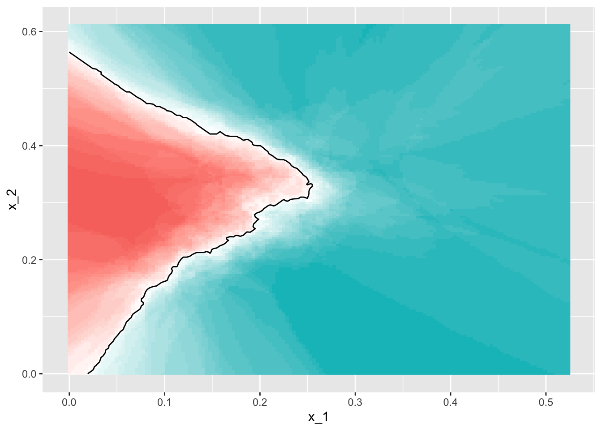
if(!require(gam)) install.packages("gam")## Loading required package: gam## Loading required package: splines## Loading required package: foreach##
## Attaching package: 'foreach'## The following objects are masked from 'package:purrr':
##
## accumulate, when## Loaded gam 1.20modelLookup("gamLoess")## model parameter label forReg forClass probModel
## 1 gamLoess span Span TRUE TRUE TRUE
## 2 gamLoess degree Degree TRUE TRUE TRUEgrid <- expand.grid(span = seq(0.15, 0.65, len = 10), degree = 1)
train_loess <- train(y ~ .,
method = "gamLoess",
tuneGrid=grid,
data = mnist_27$train)
ggplot(train_loess, highlight = TRUE)
confusionMatrix(data = predict(train_loess, mnist_27$test),
reference = mnist_27$test$y)$overall["Accuracy"]
p1 <- plot_cond_prob(predict(train_loess, mnist_27$true_p, type = "prob")[,2])
p16.8 Comprehension Check - Caret Package
- Load the rpart package and then use the
caret::train()function withmethod = "rpart"to fit a classification tree to thetissue_gene_expressiondataset. Try outcpvalues ofseq(0, 0.1, 0.01). Plot the accuracies to report the results of the best model. Set the seed to 1991.
Which value of cp gives the highest accuracy? 0
set.seed(1991, sample.kind = "Rounding") # if using R 3.6 or later## Warning in set.seed(1991, sample.kind = "Rounding"): non-uniform 'Rounding' sampler useddata("tissue_gene_expression")
fit <- with(tissue_gene_expression,
train(x, y, method = "rpart",
tuneGrid = data.frame(cp = seq(0, 0.1, 0.01))))
ggplot(fit)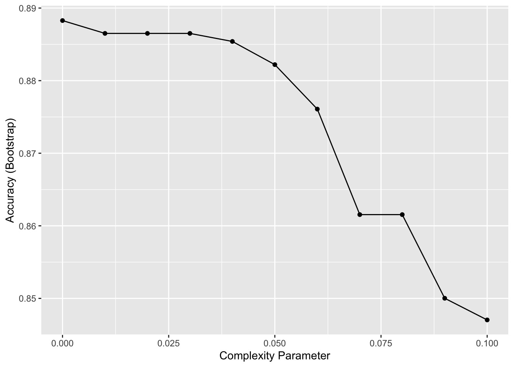
- Note that there are only 6 placentas in the dataset. By default,
rpartrequires 20 observations before splitting a node. That means that it is difficult to have a node in which placentas are the majority. Rerun the analysis you did in Q1 withcaret::train(), but this time withmethod = "rpart"and allow it to split any node by using the argumentcontrol = rpart.control(minsplit = 0). Look at the confusion matrix again to determine whether the accuracy increases. Again, set the seed to 1991.
What is the accuracy now?
# set.seed(1991) # if using R 3.5 or earlier
set.seed(1991, sample.kind = "Rounding") # if using R 3.6 or later## Warning in set.seed(1991, sample.kind = "Rounding"): non-uniform 'Rounding' sampler usedfit_rpart <- with(tissue_gene_expression,
train(x, y, method = "rpart",
tuneGrid = data.frame(cp = seq(0, 0.10, 0.01)),
control = rpart.control(minsplit = 0)))
ggplot(fit_rpart)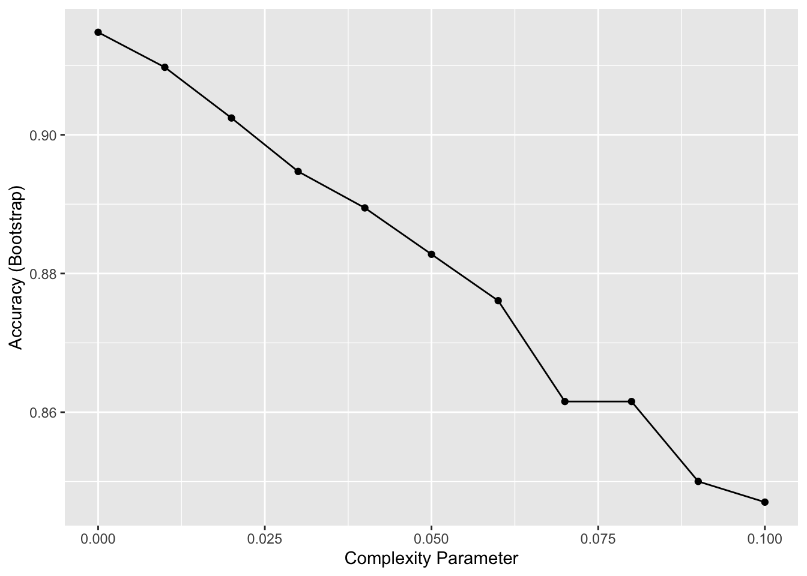
confusionMatrix(fit_rpart)## Bootstrapped (25 reps) Confusion Matrix
##
## (entries are percentual average cell counts across resamples)
##
## Reference
## Prediction cerebellum colon endometrium hippocampus kidney liver placenta
## cerebellum 19.5 0.0 0.2 0.9 0.4 0.0 0.1
## colon 0.3 16.5 0.1 0.0 0.1 0.0 0.1
## endometrium 0.1 0.2 6.4 0.1 0.9 0.1 0.5
## hippocampus 0.2 0.0 0.0 15.6 0.1 0.0 0.0
## kidney 0.3 0.3 0.9 0.1 19.1 0.5 0.3
## liver 0.0 0.0 0.3 0.0 0.3 12.6 0.2
## placenta 0.1 0.1 0.5 0.0 0.6 0.1 1.8
##
## Accuracy (average) : 0.9141- Plot the tree from the best fitting model of the analysis you ran in Q2.
Which gene is at the first split?
plot(fit_rpart$finalModel)
text(fit_rpart$finalModel)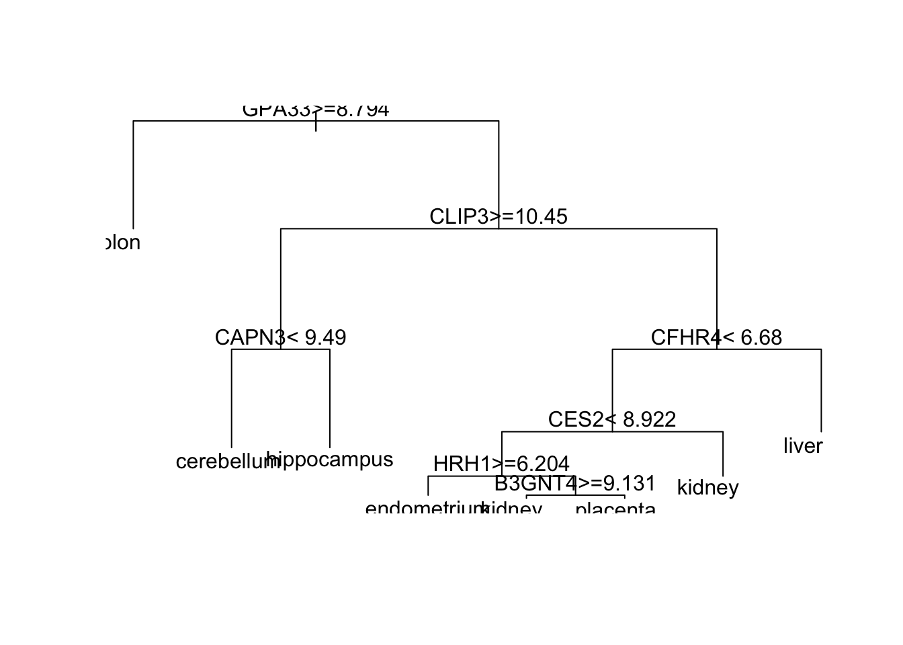
- A. B3GNT4
- B. CAPN3
- C. CES2
- D. CFHR4
- E. CLIP3
- F. GPA33
- G. HRH1
- We can see that with just seven genes, we are able to predict the tissue type. Now let’s see if we can predict the tissue type with even fewer genes using a Random Forest. Use the
train()function and therfmethod to train a Random Forest model and save it to an object calledfit. Try out values ofmtryranging fromseq(50, 200, 25)(you can also explore other values on your own). Whatmtryvalue maximizes accuracy? To permit smallnodesizeto grow as we did with the classification trees, use the following argument:nodesize = 1.
Note: This exercise will take some time to run. If you want to test out your code first, try using smaller values with ntree. Set the seed to 1991 again.
What value of mtry maximizes accuracy? 100
# set.seed(1991) # if using R 3.5 or earlier
set.seed(1991, sample.kind = "Rounding") # if using R 3.6 or later## Warning in set.seed(1991, sample.kind = "Rounding"): non-uniform 'Rounding' sampler usedlibrary(randomForest)
fit <- with(tissue_gene_expression,
train(x, y, method = "rf",
nodesize = 1,
tuneGrid = data.frame(mtry = seq(50, 200, 25))))
ggplot(fit)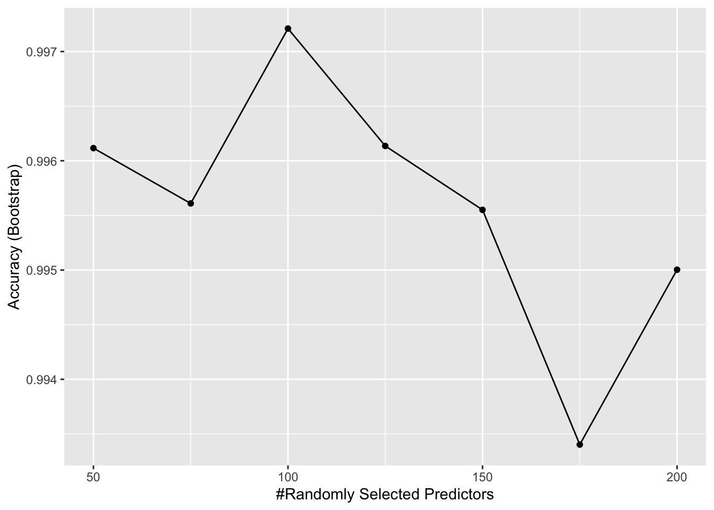
- Use the function
varImp()on the output oftrain()and save it to an object calledimp:
imp <- #BLANK
impWhat should replace #BLANK in the code above?
imp <- varImp(fit)
imp## rf variable importance
##
## only 20 most important variables shown (out of 500)
##
## Overall
## GPA33 100.00
## BIN1 64.65
## GPM6B 62.35
## KIF2C 62.15
## CLIP3 52.09
## COLGALT2 46.48
## CFHR4 35.03
## SHANK2 34.90
## TFR2 33.61
## GALNT11 30.70
## CEP55 30.49
## TCN2 27.96
## CAPN3 27.52
## CYP4F11 25.74
## GTF2IRD1 24.89
## KCTD2 24.34
## FCN3 22.68
## SUSD6 22.24
## DOCK4 22.02
## RARRES2 21.53- The
rpart()model we ran above in Q2 produced a tree that used just seven predictors. Extracting the predictor names is not straightforward, but can be done. If the output of the call to train wasfit_rpart, we can extract the names like this: 1/1 point (graded)
tree_terms <- as.character(unique(fit_rpart$finalModel$frame$var[!(fit_rpart$finalModel$frame$var == "<leaf>")]))
tree_terms## [1] "GPA33" "CLIP3" "CAPN3" "CFHR4" "CES2" "HRH1" "B3GNT4"Calculate the variable importance in the Random Forest call from Q4 for these seven predictors and examine where they rank.
What is the importance of the CFHR4 gene in the Random Forest call? 35.0
What is the rank of the CFHR4 gene in the Random Forest call? 7
data_frame(term = rownames(imp$importance),
importance = imp$importance$Overall) %>%
mutate(rank = rank(-importance)) %>% arrange(desc(importance)) %>%
filter(term %in% tree_terms)## # A tibble: 7 x 3
## term importance rank
## <chr> <dbl> <dbl>
## 1 GPA33 100 1
## 2 CLIP3 52.1 5
## 3 CFHR4 35.0 7
## 4 CAPN3 27.5 13
## 5 CES2 20.0 22
## 6 HRH1 2.35 97
## 7 B3GNT4 0.136 3436.9 Titanic Exercises - Part 1
These exercises cover everything you have learned in this course so far. You will use the background information to provided to train a number of different types of models on this dataset.
Background
The Titanic was a British ocean liner that struck an iceberg and sunk on its maiden voyage in 1912 from the United Kingdom to New York. More than 1,500 of the estimated 2,224 passengers and crew died in the accident, making this one of the largest maritime disasters ever outside of war. The ship carried a wide range of passengers of all ages and both genders, from luxury travelers in first-class to immigrants in the lower classes. However, not all passengers were equally likely to survive the accident. You will use real data about a selection of 891 passengers to predict which passengers survived.
if(!require(titanic)) install.packages("titanic")## Loading required package: titaniclibrary(titanic) # loads titanic_train data frame
# 3 significant digits
options(digits = 3)
# clean the data - `titanic_train` is loaded with the titanic package
titanic_clean <- titanic_train %>%
mutate(Survived = factor(Survived),
Embarked = factor(Embarked),
Age = ifelse(is.na(Age), median(Age, na.rm = TRUE), Age), # NA age to median age
FamilySize = SibSp + Parch + 1) %>% # count family members
dplyr::select(Survived, Sex, Pclass, Age, Fare, SibSp, Parch, FamilySize, Embarked)- Training and test sets
Split titanic_clean into test and training sets - after running the setup code, it should have 891 rows and 9 variables.
Set the seed to 42, then use the caret package to create a 20% data partition based on the Survived column. Assign the 20% partition to test_set and the remaining 80% partition to train_set.
How many observations are in the training set?
#set.seed(42) # if using R 3.5 or earlier
set.seed(42, sample.kind = "Rounding") # if using R 3.6 or later## Warning in set.seed(42, sample.kind = "Rounding"): non-uniform 'Rounding' sampler usedtest_index <- createDataPartition(titanic_clean$Survived, times = 1, p = 0.2, list = FALSE) # create a 20% test set
test_set <- titanic_clean[test_index,]
train_set <- titanic_clean[-test_index,]
nrow(train_set)## [1] 712How many observations are in the test set?
nrow(test_set)## [1] 179What proportion of individuals in the training set survived?
mean(train_set$Survived == 1)## [1] 0.383- Baseline prediction by guessing the outcome
The simplest prediction method is randomly guessing the outcome without using additional predictors. These methods will help us determine whether our machine learning algorithm performs better than chance. How accurate are two methods of guessing Titanic passenger survival?
Set the seed to 3. For each individual in the test set, randomly guess whether that person survived or not by sampling from the vector c(0,1) (Note: use the default argument setting of prob from the sample function).
What is the accuracy of this guessing method?
#set.seed(3)
set.seed(3, sample.kind = "Rounding")## Warning in set.seed(3, sample.kind = "Rounding"): non-uniform 'Rounding' sampler used# guess with equal probability of survival
guess <- sample(c(0,1), nrow(test_set), replace = TRUE)
mean(guess == test_set$Survived)## [1] 0.4753a. Predicting survival by sex
Use the training set to determine whether members of a given sex were more likely to survive or die. Apply this insight to generate survival predictions on the test set.
What proportion of training set females survived?
train_set %>%
group_by(Sex) %>%
summarize(Survived = mean(Survived == 1)) %>%
filter(Sex == "female") %>%
pull(Survived)## `summarise()` ungrouping output (override with `.groups` argument)## [1] 0.731What proportion of training set males survived?
train_set %>%
group_by(Sex) %>%
summarize(Survived = mean(Survived == 1)) %>%
filter(Sex == "male") %>%
pull(Survived)## `summarise()` ungrouping output (override with `.groups` argument)## [1] 0.1973b. Predicting survival by sex
Predict survival using sex on the test set: if the survival rate for a sex is over 0.5, predict survival for all individuals of that sex, and predict death if the survival rate for a sex is under 0.5.
What is the accuracy of this sex-based prediction method on the test set?
sex_model <- ifelse(test_set$Sex == "female", 1, 0) # predict Survived=1 if female, 0 if male
mean(sex_model == test_set$Survived) # calculate accuracy## [1] 0.8214a. Predicting survival by passenger class
In the training set, which class(es) (Pclass) were passengers more likely to survive than die?
train_set %>%
group_by(Pclass) %>%
summarize(Survived = mean(Survived == 1))## `summarise()` ungrouping output (override with `.groups` argument)## # A tibble: 3 x 2
## Pclass Survived
## <int> <dbl>
## 1 1 0.619
## 2 2 0.5
## 3 3 0.242Select ALL that apply.
- A. 1
- B. 2
- C. 3
4b. Predicting survival by passenger class
Predict survival using passenger class on the test set: predict survival if the survival rate for a class is over 0.5, otherwise predict death.
What is the accuracy of this class-based prediction method on the test set?
class_model <- ifelse(test_set$Pclass == 1, 1, 0) # predict survival only if first class
mean(class_model == test_set$Survived) # calculate accuracy## [1] 0.7044c. Predicting survival by passenger class
Use the training set to group passengers by both sex and passenger class.
Which sex and class combinations were more likely to survive than die?
train_set %>%
group_by(Sex, Pclass) %>%
summarize(Survived = mean(Survived == 1)) %>%
filter(Survived > 0.5)## `summarise()` regrouping output by 'Sex' (override with `.groups` argument)## # A tibble: 2 x 3
## # Groups: Sex [1]
## Sex Pclass Survived
## <chr> <int> <dbl>
## 1 female 1 0.957
## 2 female 2 0.919Select ALL that apply.
- A. female 1st class
- B. female 2nd class
- C. female 3rd class
- D. male 1st class
- E. male 2nd class
- F. male 3rd class
4d. Predicting survival by passenger class
Predict survival using both sex and passenger class on the test set. Predict survival if the survival rate for a sex/class combination is over 0.5, otherwise predict death.
What is the accuracy of this sex- and class-based prediction method on the test set?
sex_class_model <- ifelse(test_set$Sex == "female" & test_set$Pclass != 3, 1, 0)
mean(sex_class_model == test_set$Survived)## [1] 0.8215a. Confusion matrix
Use the confusionMatrix() function to create confusion matrices for the sex model, class model, and combined sex and class model. You will need to convert predictions and survival status to factors to use this function.
confusionMatrix(data = factor(sex_model), reference = factor(test_set$Survived))## Confusion Matrix and Statistics
##
## Reference
## Prediction 0 1
## 0 96 18
## 1 14 51
##
## Accuracy : 0.821
## 95% CI : (0.757, 0.874)
## No Information Rate : 0.615
## P-Value [Acc > NIR] : 1.72e-09
##
## Kappa : 0.619
##
## Mcnemar's Test P-Value : 0.596
##
## Sensitivity : 0.873
## Specificity : 0.739
## Pos Pred Value : 0.842
## Neg Pred Value : 0.785
## Prevalence : 0.615
## Detection Rate : 0.536
## Detection Prevalence : 0.637
## Balanced Accuracy : 0.806
##
## 'Positive' Class : 0
## confusionMatrix(data = factor(class_model), reference = factor(test_set$Survived))## Confusion Matrix and Statistics
##
## Reference
## Prediction 0 1
## 0 94 37
## 1 16 32
##
## Accuracy : 0.704
## 95% CI : (0.631, 0.77)
## No Information Rate : 0.615
## P-Value [Acc > NIR] : 0.00788
##
## Kappa : 0.337
##
## Mcnemar's Test P-Value : 0.00601
##
## Sensitivity : 0.855
## Specificity : 0.464
## Pos Pred Value : 0.718
## Neg Pred Value : 0.667
## Prevalence : 0.615
## Detection Rate : 0.525
## Detection Prevalence : 0.732
## Balanced Accuracy : 0.659
##
## 'Positive' Class : 0
## confusionMatrix(data = factor(sex_class_model), reference = factor(test_set$Survived))## Confusion Matrix and Statistics
##
## Reference
## Prediction 0 1
## 0 109 31
## 1 1 38
##
## Accuracy : 0.821
## 95% CI : (0.757, 0.874)
## No Information Rate : 0.615
## P-Value [Acc > NIR] : 1.72e-09
##
## Kappa : 0.589
##
## Mcnemar's Test P-Value : 2.95e-07
##
## Sensitivity : 0.991
## Specificity : 0.551
## Pos Pred Value : 0.779
## Neg Pred Value : 0.974
## Prevalence : 0.615
## Detection Rate : 0.609
## Detection Prevalence : 0.782
## Balanced Accuracy : 0.771
##
## 'Positive' Class : 0
## What is the “positive” class used to calculate confusion matrix metrics?
- A. 0
- B. 1
Which model has the highest sensitivity?
- A. sex only
- B. class only
- C. sex and class combined
Which model has the highest specificity?
- A. sex only
- B. class only
- C. sex and class combined
Which model has the highest balanced accuracy?
- A. sex only
- B. class only
- C. sex and class combined
5b. Confusion matrix
What is the maximum value of balanced accuracy? 0.806
- F1 scores
Use the F_meas() function to calculate \(F_1\) scores for the sex model, class model, and combined sex and class model. You will need to convert predictions to factors to use this function.
Which model has the highest \(F_1\) score?
F_meas(data = factor(sex_model), reference = test_set$Survived)## [1] 0.857F_meas(data = factor(class_model), reference = test_set$Survived)## [1] 0.78F_meas(data = factor(sex_class_model), reference = test_set$Survived)## [1] 0.872- A. sex only
- B. class only
- C. sex and class combined
What is the maximum value of the \(F_1\) score? 0.872
6.10 Titanic Exercises - Part 2
- Survival by fare - LDA and QDA
Set the seed to 1. Train a model using linear discriminant analysis (LDA) with the caret lda method using fare as the only predictor.
What is the accuracy on the test set for the LDA model?
#set.seed(1) # if using R 3.5 or earlier
set.seed(1, sample.kind = "Rounding") # if using R 3.6 or later## Warning in set.seed(1, sample.kind = "Rounding"): non-uniform 'Rounding' sampler usedtrain_lda <- train(Survived ~ Fare, method = "lda", data = train_set)
lda_preds <- predict(train_lda, test_set)
mean(lda_preds == test_set$Survived)## [1] 0.693Set the seed to 1. Train a model using quadratic discriminant analysis (QDA) with the caret qda method using fare as the only predictor.
What is the accuracy on the test set for the QDA model?
#set.seed(1) # if using R 3.5 or earlier
set.seed(1, sample.kind = "Rounding") # if using R 3.6 or later## Warning in set.seed(1, sample.kind = "Rounding"): non-uniform 'Rounding' sampler usedtrain_qda <- train(Survived ~ Fare, method = "qda", data = train_set)
qda_preds <- predict(train_qda, test_set)
mean(qda_preds == test_set$Survived)## [1] 0.693Note: when training models for Titanic Exercises Part 2, please use the S3 method for class formula rather than the default S3 method of caret train() (see ?caret::train for details).
- Logistic regression models
Set the seed to 1. Train a logistic regression model with the caret glm method using age as the only predictor.
What is the accuracy of your model (using age as the only predictor) on the test set ?
#set.seed(1) # if using R 3.5 or earlier
set.seed(1, sample.kind = "Rounding") # if using R 3.6 or later## Warning in set.seed(1, sample.kind = "Rounding"): non-uniform 'Rounding' sampler usedtrain_glm_age <- train(Survived ~ Age, method = "glm", data = train_set)
glm_preds_age <- predict(train_glm_age, test_set)
mean(glm_preds_age == test_set$Survived)## [1] 0.615Set the seed to 1. Train a logistic regression model with the caret glm method using four predictors: sex, class, fare, and age.
What is the accuracy of your model (using these four predictors) on the test set?
#set.seed(1) # if using R 3.5 or earlier
set.seed(1, sample.kind = "Rounding") # if using R 3.6 or later## Warning in set.seed(1, sample.kind = "Rounding"): non-uniform 'Rounding' sampler usedtrain_glm <- train(Survived ~ Sex + Pclass + Fare + Age, method = "glm", data = train_set)
glm_preds <- predict(train_glm, test_set)
mean(glm_preds == test_set$Survived)## [1] 0.849Set the seed to 1. Train a logistic regression model with the caret glm method using all predictors. Ignore warnings about rank-deficient fit.
What is the accuracy of your model (using all predictors) on the test set?
#set.seed(1) # if using R 3.5 or earlier
set.seed(1, sample.kind = "Rounding") # if using R 3.6 or later## Warning in set.seed(1, sample.kind = "Rounding"): non-uniform 'Rounding' sampler usedtrain_glm_all <- train(Survived ~ ., method = "glm", data = train_set)## Warning in predict.lm(object, newdata, se.fit, scale = 1, type = if (type == : prediction from a rank-deficient fit may be misleading## Warning in predict.lm(object, newdata, se.fit, scale = 1, type = if (type == : prediction from a rank-deficient fit may be misleading
## Warning in predict.lm(object, newdata, se.fit, scale = 1, type = if (type == : prediction from a rank-deficient fit may be misleading
## Warning in predict.lm(object, newdata, se.fit, scale = 1, type = if (type == : prediction from a rank-deficient fit may be misleading
## Warning in predict.lm(object, newdata, se.fit, scale = 1, type = if (type == : prediction from a rank-deficient fit may be misleading
## Warning in predict.lm(object, newdata, se.fit, scale = 1, type = if (type == : prediction from a rank-deficient fit may be misleading
## Warning in predict.lm(object, newdata, se.fit, scale = 1, type = if (type == : prediction from a rank-deficient fit may be misleading
## Warning in predict.lm(object, newdata, se.fit, scale = 1, type = if (type == : prediction from a rank-deficient fit may be misleading
## Warning in predict.lm(object, newdata, se.fit, scale = 1, type = if (type == : prediction from a rank-deficient fit may be misleading
## Warning in predict.lm(object, newdata, se.fit, scale = 1, type = if (type == : prediction from a rank-deficient fit may be misleading
## Warning in predict.lm(object, newdata, se.fit, scale = 1, type = if (type == : prediction from a rank-deficient fit may be misleading
## Warning in predict.lm(object, newdata, se.fit, scale = 1, type = if (type == : prediction from a rank-deficient fit may be misleading
## Warning in predict.lm(object, newdata, se.fit, scale = 1, type = if (type == : prediction from a rank-deficient fit may be misleading
## Warning in predict.lm(object, newdata, se.fit, scale = 1, type = if (type == : prediction from a rank-deficient fit may be misleading
## Warning in predict.lm(object, newdata, se.fit, scale = 1, type = if (type == : prediction from a rank-deficient fit may be misleading
## Warning in predict.lm(object, newdata, se.fit, scale = 1, type = if (type == : prediction from a rank-deficient fit may be misleading
## Warning in predict.lm(object, newdata, se.fit, scale = 1, type = if (type == : prediction from a rank-deficient fit may be misleading
## Warning in predict.lm(object, newdata, se.fit, scale = 1, type = if (type == : prediction from a rank-deficient fit may be misleading
## Warning in predict.lm(object, newdata, se.fit, scale = 1, type = if (type == : prediction from a rank-deficient fit may be misleading
## Warning in predict.lm(object, newdata, se.fit, scale = 1, type = if (type == : prediction from a rank-deficient fit may be misleading
## Warning in predict.lm(object, newdata, se.fit, scale = 1, type = if (type == : prediction from a rank-deficient fit may be misleading
## Warning in predict.lm(object, newdata, se.fit, scale = 1, type = if (type == : prediction from a rank-deficient fit may be misleading
## Warning in predict.lm(object, newdata, se.fit, scale = 1, type = if (type == : prediction from a rank-deficient fit may be misleading
## Warning in predict.lm(object, newdata, se.fit, scale = 1, type = if (type == : prediction from a rank-deficient fit may be misleading
## Warning in predict.lm(object, newdata, se.fit, scale = 1, type = if (type == : prediction from a rank-deficient fit may be misleadingglm_all_preds <- predict(train_glm_all, test_set)## Warning in predict.lm(object, newdata, se.fit, scale = 1, type = if (type == : prediction from a rank-deficient fit may be misleadingmean(glm_all_preds == test_set$Survived)## [1] 0.8499a. kNN model
Set the seed to 6. Train a kNN model on the training set using the caret train function. Try tuning with k = seq(3, 51, 2).
What is the optimal value of the number of neighbors k?
#set.seed(6)
set.seed(6, sample.kind = "Rounding") # if using R 3.6 or later## Warning in set.seed(6, sample.kind = "Rounding"): non-uniform 'Rounding' sampler usedtrain_knn <- train(Survived ~ .,
method = "knn",
data = train_set,
tuneGrid = data.frame(k = seq(3, 51, 2)))
train_knn$bestTune## k
## 5 119b. kNN model
Plot the kNN model to investigate the relationship between the number of neighbors and accuracy on the training set.
Of these values of \(k\), which yields the highest accuracy?
ggplot(train_knn)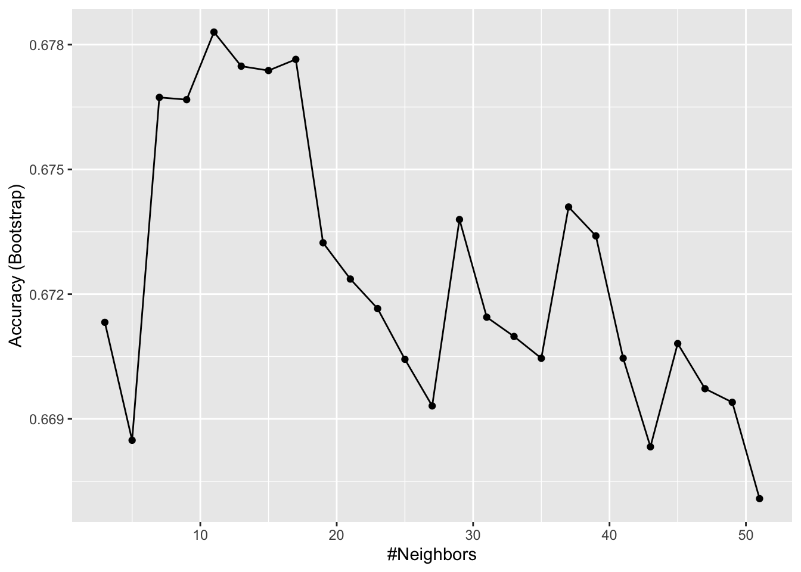
- A. 7
- B. 11
- C. 17
- D. 21
9c. kNN model
What is the accuracy of the kNN model on the test set?
knn_preds <- predict(train_knn, test_set)
mean(knn_preds == test_set$Survived)## [1] 0.709- Cross-validation
Set the seed to 8 and train a new kNN model. Instead of the default training control, use 10-fold cross-validation where each partition consists of 10% of the total. Try tuning with k = seq(3, 51, 2).
What is the optimal value of k using cross-validation?
#set.seed(8)
set.seed(8, sample.kind = "Rounding") # simulate R 3.5## Warning in set.seed(8, sample.kind = "Rounding"): non-uniform 'Rounding' sampler usedtrain_knn_cv <- train(Survived ~ .,
method = "knn",
data = train_set,
tuneGrid = data.frame(k = seq(3, 51, 2)),
trControl = trainControl(method = "cv", number = 10, p = 0.9))
train_knn_cv$bestTune## k
## 2 5What is the accuracy on the test set using the cross-validated kNN model?
knn_cv_preds <- predict(train_knn_cv, test_set)
mean(knn_cv_preds == test_set$Survived)## [1] 0.64811a. Classification tree model
Set the seed to 10. Use caret to train a decision tree with the rpart method. Tune the complexity parameter with cp = seq(0, 0.05, 0.002).
What is the optimal value of the complexity parameter (cp)?
#set.seed(10)
set.seed(10, sample.kind = "Rounding") # simulate R 3.5## Warning in set.seed(10, sample.kind = "Rounding"): non-uniform 'Rounding' sampler usedtrain_rpart <- train(Survived ~ .,
method = "rpart",
tuneGrid = data.frame(cp = seq(0, 0.05, 0.002)),
data = train_set)
train_rpart$bestTune## cp
## 9 0.016What is the accuracy of the decision tree model on the test set?
rpart_preds <- predict(train_rpart, test_set)
mean(rpart_preds == test_set$Survived)## [1] 0.83811b. Classification tree model
Inspect the final model and plot the decision tree.
train_rpart$finalModel # inspect final model## n= 712
##
## node), split, n, loss, yval, (yprob)
## * denotes terminal node
##
## 1) root 712 273 0 (0.6166 0.3834)
## 2) Sexmale>=0.5 463 91 0 (0.8035 0.1965)
## 4) Age>=3.5 449 80 0 (0.8218 0.1782) *
## 5) Age< 3.5 14 3 1 (0.2143 0.7857) *
## 3) Sexmale< 0.5 249 67 1 (0.2691 0.7309)
## 6) Pclass>=2.5 118 59 0 (0.5000 0.5000)
## 12) Fare>=23.4 24 3 0 (0.8750 0.1250) *
## 13) Fare< 23.4 94 38 1 (0.4043 0.5957) *
## 7) Pclass< 2.5 131 8 1 (0.0611 0.9389) *# make plot of decision tree
plot(train_rpart$finalModel, margin = 0.1)
text(train_rpart$finalModel)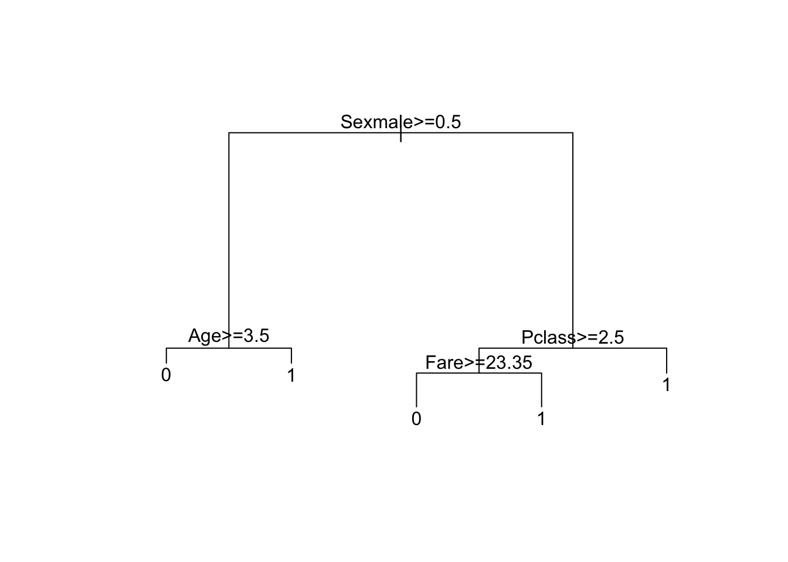
Which variables are used in the decision tree?
Select ALL that apply.
- A. Survived
- B. Sex
- C. Pclass
- D. Age
- E. Fare
- F. Parch
- G. Embarked
11c. Classification tree model
Using the decision rules generated by the final model, predict whether the following individuals would survive.
- A 28-year-old male
would NOT survive - A female in the second passenger class
would survive - A third-class female who paid a fare of $8
would survive - A 5-year-old male with 4 siblings
would NOT survive - A third-class female who paid a fare of $25
would NOT survive - A first-class 17-year-old female with 2 siblings
would survive - A first-class 17-year-old male with 2 siblings
would NOT survive
- Random forest model
Set the seed to 14. Use the caret train() function with the rf method to train a random forest. Test values of mtry = seq(1:7). Set ntree to 100.
What mtry value maximizes accuracy?
#set.seed(14)
set.seed(14, sample.kind = "Rounding") # simulate R 3.5## Warning in set.seed(14, sample.kind = "Rounding"): non-uniform 'Rounding' sampler usedtrain_rf <- train(Survived ~ .,
data = train_set,
method = "rf",
ntree = 100,
tuneGrid = data.frame(mtry = seq(1:7)))
train_rf$bestTune## mtry
## 2 2What is the accuracy of the random forest model on the test set?
rf_preds <- predict(train_rf, test_set)
mean(rf_preds == test_set$Survived)## [1] 0.844Use varImp() on the random forest model object to determine the importance of various predictors to the random forest model.
What is the most important variable?
varImp(train_rf) # first row## rf variable importance
##
## Overall
## Sexmale 100.000
## Fare 65.091
## Age 45.533
## Pclass 32.529
## FamilySize 18.275
## SibSp 7.881
## Parch 7.150
## EmbarkedS 2.839
## EmbarkedQ 0.122
## EmbarkedC 0.000